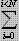

ZCM30:BSCRPT_SD_CALL_DROPS
This measurement provides the number of call drops on the SDCCHs of all the cells controlled by a BSC, including the call release caused by air interface failure, no measurement report reported by the MS for a long time, Abis interface failure, equipment failure, and forced handover.
Integer number or integer.
This counter is measured according to the following formula when the measurement period ends. For details on the measurement point, see "Call Drops on SDCCH".
Call Drops on SDCCH per BSC =  Call Drops on SDCCH
(That is, the total of the original counter Call Drops on SDCCH in all the cells of the BSC.)